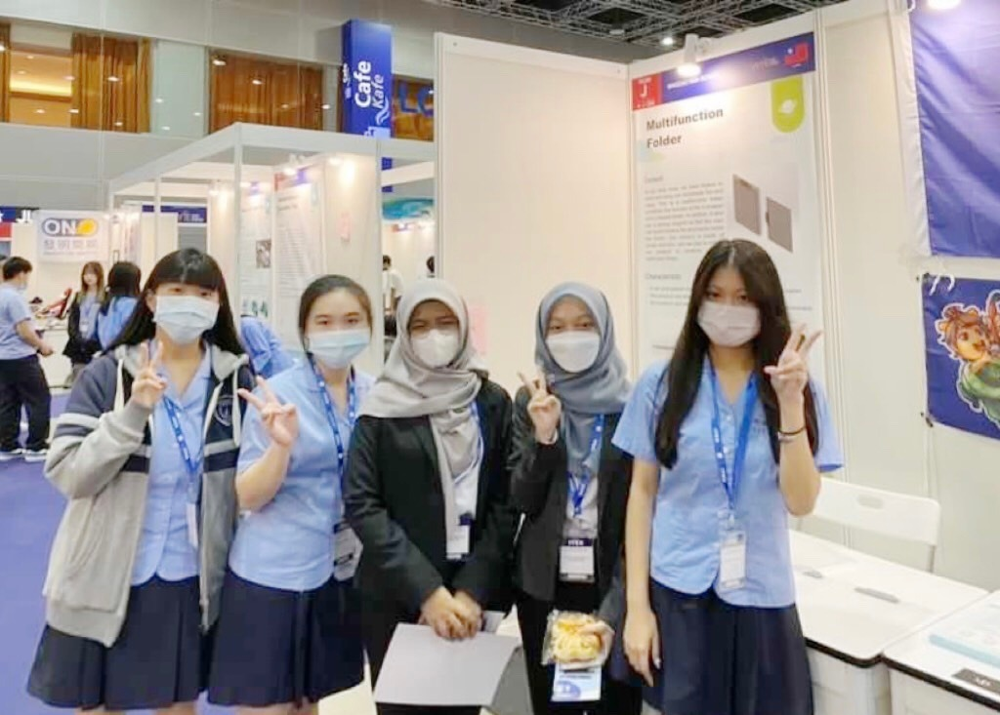
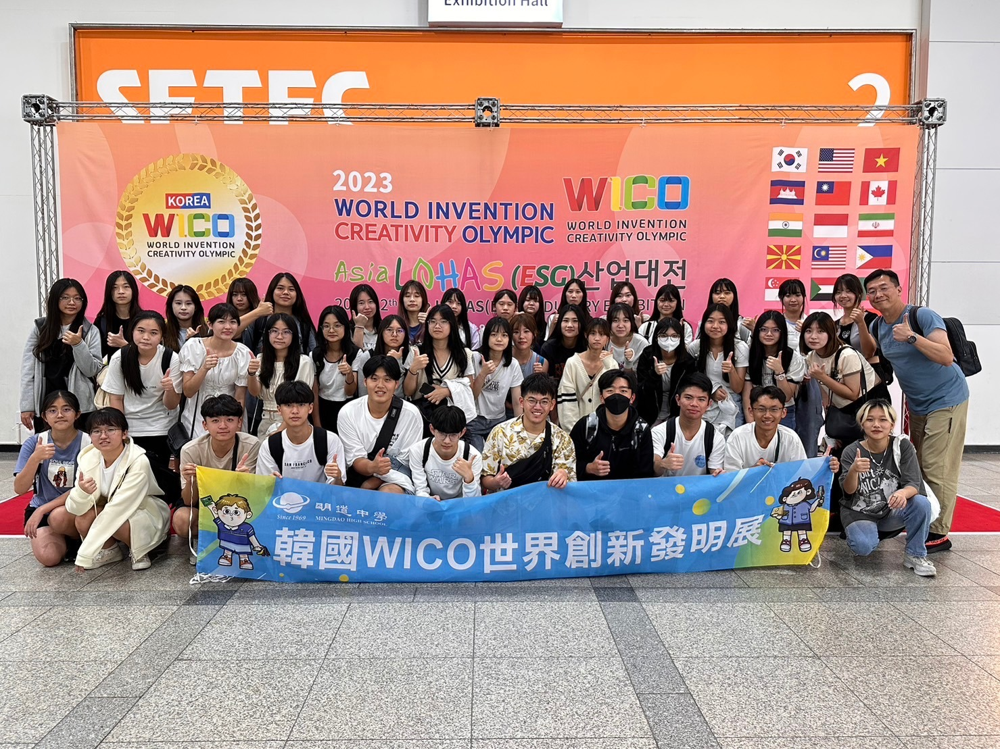
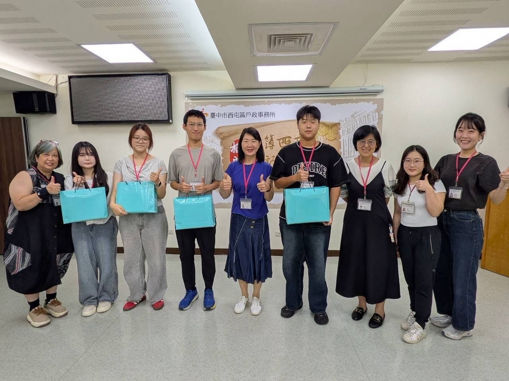
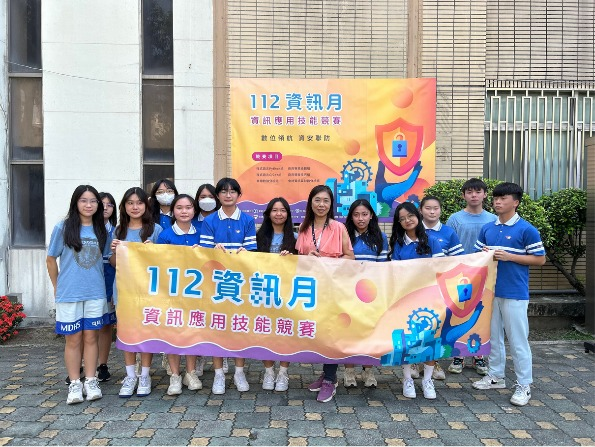

馬來西亞國際發明展
團隊作品解說員擔任團隊作品解說員，負責以英語向國際評審與各國選手介紹創意作品的設計理念。一開始因為語言溝通而感到緊張，但在不斷實戰中克服了語言障礙。這次經驗大幅提升了我的臨場膽識與聆聽技巧，也深刻體會到團隊分工與責任心的重要性。
檢視佐證資料 →目前就讀於中原大學資訊管理學系，平時喜愛條理分明的版面規劃，擅長將繁複瑣碎的行政、數據與簡報資料轉化為結構清晰的視覺格式。
具備良好的耐心與跨工具整合能力，多次參與國際發明展英文發表，持續關注資訊管理與數位工具的實務應用。

擔任團隊作品解說員，負責以英語向國際評審與各國選手介紹創意作品的設計理念。一開始因為語言溝通而感到緊張，但在不斷實戰中克服了語言障礙。這次經驗大幅提升了我的臨場膽識與聆聽技巧，也深刻體會到團隊分工與責任心的重要性。
檢視佐證資料 →


擔任競賽團隊簡報製作與技巧應用成員，賽前投入大量時間鑽研 PowerPoint 進階功能與版面排版訓練。面臨比賽限時高壓環境，成功將平時累積的知識儲備轉化為直覺實作，最終與隊友齊心榮獲全國團體第一，大幅提升了我的軟體專業度與資訊領域深造信心。
檢視佐證資料 →具備進階文書整合、資料庫應用與系統操作之國家級專業認證
取得 Word 進階級、PowerPoint 進階級與 Excel 實用級完整辦公能力證明
熟悉資訊化帳務處理、商業數據邏輯與財務報表結構化管理
馬來西亞國際發明展 — 參展現場紀錄
韓國世界發明創新競賽 — 參展紀錄
臺中市政府 暑期工讀 — 實習紀錄
112年資訊月 商用簡報技巧組 — 全國團體第一